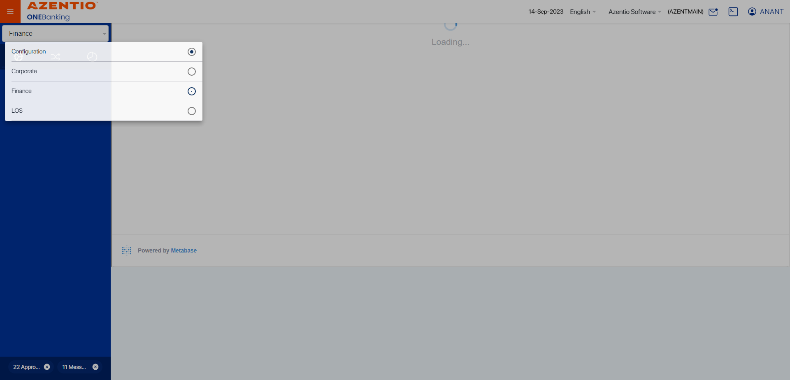
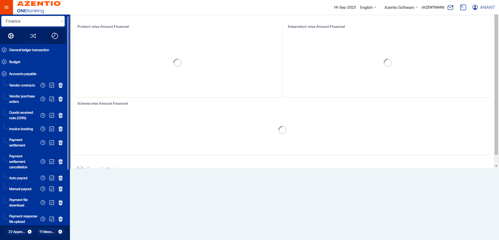
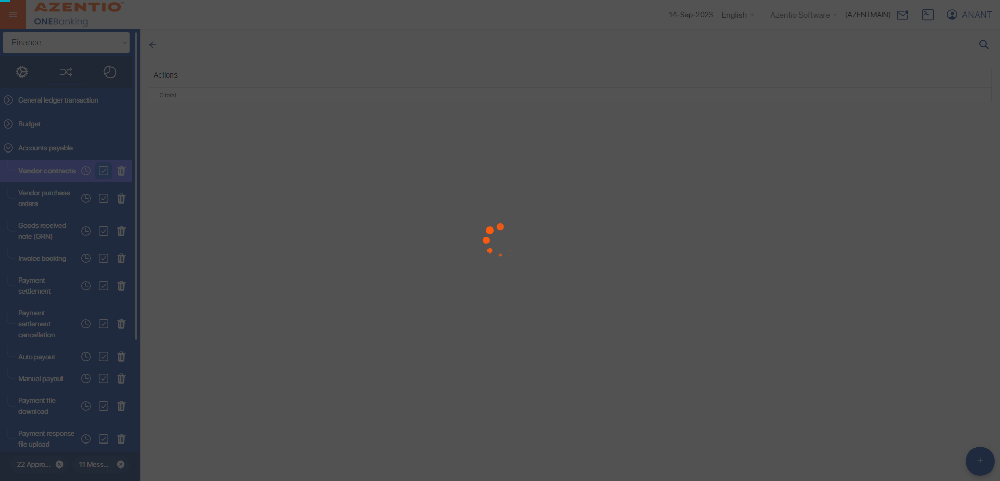
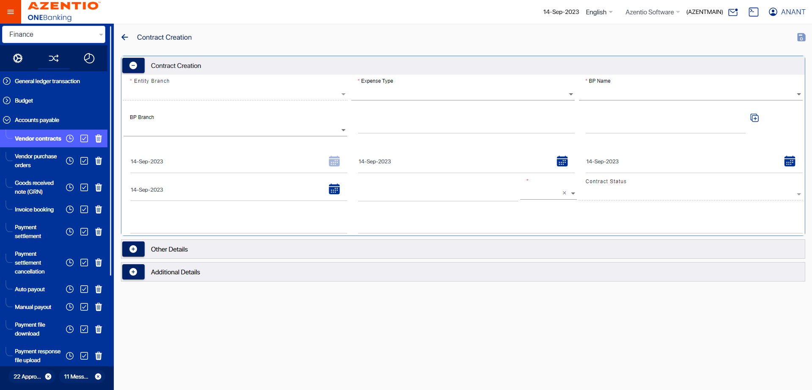
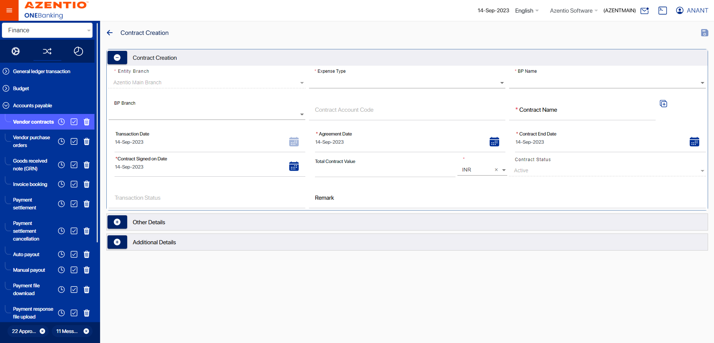
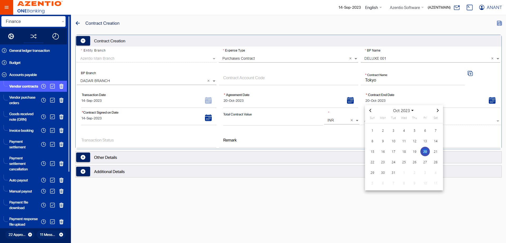
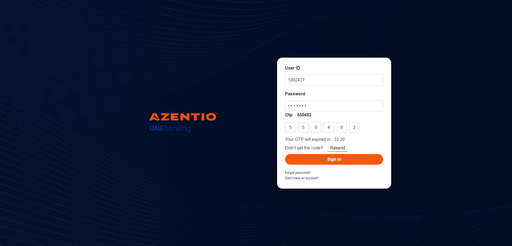
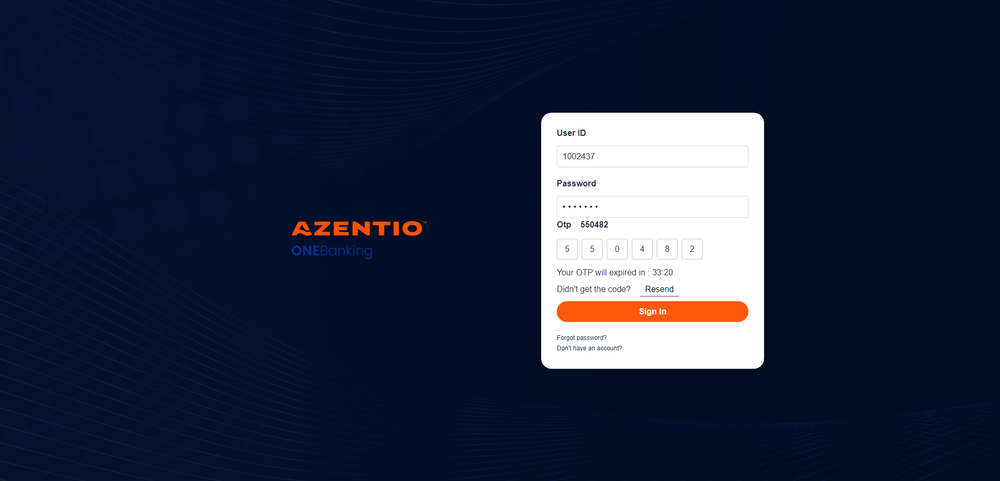

-
AR/AP Module
12:35:16 PM / 31:41:466 Fail
AR/AP Module
11.09.2022 12:35:16 11.09.2022 12:36:57 31:41:466 · #test-id=1FailCreate a contract for an active vendor with expense type PurchasesGiven User should go to the kubs url and login as a maker userstepdefinitions.HooksClass.addScreenshot(io.cucumber.java.Scenario)screenshotAnd user should navigate to accounts payable menustepdefinitions.HooksClass.addScreenshot(io.cucumber.java.Scenario)screenshotWhen click on eye button of vendor contractstepdefinitions.HooksClass.addScreenshot(io.cucumber.java.Scenario)screenshotAnd click on add button to create contractstepdefinitions.HooksClass.addScreenshot(io.cucumber.java.Scenario)screenshotAnd user update the data set ID for vendor contractstepdefinitions.HooksClass.addScreenshot(io.cucumber.java.Scenario)screenshotAnd Fill the required fields to create contractstepdefinitions.HooksClass.addScreenshot(io.cucumber.java.Scenario)screenshotAnd Save the Record from makerStep skippedThen click on the Notification iconStep skippedThen Search Contract Creation record in ListStep skippedThen store the Reference ID and open the vendor contract recordStep skippedThen click submit and enter remark for vendor contractStep skippedThen Save and submit the creation contract recordStep skippedFailReviewer approve contract for an active vendor with expense type PurchasesAnd user update the data set ID for vendor contract Reviewerstepdefinitions.HooksClass.addScreenshot(io.cucumber.java.Scenario)screenshot And User should go to the kubs url and login as a reviewer userstepdefinitions.HooksClass.addScreenshot(io.cucumber.java.Scenario)Then Click on notification button in reviewerStep skippedThen Search Contract Creation record in ListStep skippedAnd approve the record by reviewer userStep skippedstepdefinitions.HooksClass.TearDown(io.cucumber.java.Scenario)FailChecker approve contract for an active vendor with expense type PurchasesAnd user update the data set ID for vendor contract Reviewerstepdefinitions.HooksClass.addScreenshot(io.cucumber.java.Scenario)screenshot
And User should go to the kubs url and login as a reviewer userstepdefinitions.HooksClass.addScreenshot(io.cucumber.java.Scenario)Then Click on notification button in reviewerStep skippedThen Search Contract Creation record in ListStep skippedAnd approve the record by reviewer userStep skippedstepdefinitions.HooksClass.TearDown(io.cucumber.java.Scenario)FailChecker approve contract for an active vendor with expense type PurchasesAnd user update the data set ID for vendor contract Reviewerstepdefinitions.HooksClass.addScreenshot(io.cucumber.java.Scenario)screenshot Given User should go to the kubs url and login as a checker userstepdefinitions.HooksClass.addScreenshot(io.cucumber.java.Scenario)screenshotAnd Click on security management in checkerstepdefinitions.HooksClass.addScreenshot(io.cucumber.java.Scenario)Then Click on open pool in checkerStep skippedAnd Click on claim button in checkerStep skippedAnd capture claimed statusStep skippedThen click on notification in checkerStep skippedThen Search Contract Creation record in ListStep skippedThen checker should approved the contract recordStep skippedstepdefinitions.HooksClass.TearDown(io.cucumber.java.Scenario)FailTo verify approve contract record should visible in vendor contract listAnd user update the data set ID for vendor contractstepdefinitions.HooksClass.addScreenshot(io.cucumber.java.Scenario)screenshot
Given User should go to the kubs url and login as a checker userstepdefinitions.HooksClass.addScreenshot(io.cucumber.java.Scenario)screenshotAnd Click on security management in checkerstepdefinitions.HooksClass.addScreenshot(io.cucumber.java.Scenario)Then Click on open pool in checkerStep skippedAnd Click on claim button in checkerStep skippedAnd capture claimed statusStep skippedThen click on notification in checkerStep skippedThen Search Contract Creation record in ListStep skippedThen checker should approved the contract recordStep skippedstepdefinitions.HooksClass.TearDown(io.cucumber.java.Scenario)FailTo verify approve contract record should visible in vendor contract listAnd user update the data set ID for vendor contractstepdefinitions.HooksClass.addScreenshot(io.cucumber.java.Scenario)screenshot Given User should go to the kubs url and login as a maker userstepdefinitions.HooksClass.addScreenshot(io.cucumber.java.Scenario)And user should navigate to accounts payable menuStep skippedWhen click on eye button of vendor contractStep skippedThen Get the contract and Txn status by searching the record via business partnerStep skippedAnd maker should logoutStep skippedstepdefinitions.HooksClass.TearDown(io.cucumber.java.Scenario)
Given User should go to the kubs url and login as a maker userstepdefinitions.HooksClass.addScreenshot(io.cucumber.java.Scenario)And user should navigate to accounts payable menuStep skippedWhen click on eye button of vendor contractStep skippedThen Get the contract and Txn status by searching the record via business partnerStep skippedAnd maker should logoutStep skippedstepdefinitions.HooksClass.TearDown(io.cucumber.java.Scenario)
Started
Nov 9, 2022 12:35:15 PM
Ended
Nov 9, 2022 12:36:57 PM
Features Passed
0
Features Failed
1
Features
Scenarios
Steps
Timeline
Tags
| Name | Passed | Failed | Skipped | Others | Passed % |
|---|---|---|---|---|---|
| @KUBS_AR/AP_UAT_001_001_TC_001_01 | 0 | 1 | 0 | 0 | 0% |
System/Environment
| Name | Value |
|---|---|
| version | 10 |
| os | windows |
-
@KUBS_AR/AP_UAT_001_001_TC_001_01
1 tests
@KUBS_AR/AP_UAT_001_001_TC_001_01
1 failedStatus Timestamp TestName Fail 12:35:16 PM Create a contract for an active vendor with expense type Purchases AR/AP Module.Create a contract for an active vendor with expense type Purchases
-
org.openqa.selenium.NoSuchWindowException
1 tests
org.openqa.selenium.NoSuchWindowException
1 failedStatus Timestamp TestName Fail 12:35:50 PM And User should go to the kubs url and login as a reviewer user AR/AP Module.Reviewer approve contract for an active vendor with expense type Purchases.And User should go to the kubs url and login as a reviewer userFail 12:36:19 PM stepdefinitions.HooksClass.addScreenshot(io.cucumber.java.Scenario) AR/AP Module.Reviewer approve contract for an active vendor with expense type Purchases.stepdefinitions.HooksClass.addScreenshot(io.cucumber.java.Scenario) -
org.openqa.selenium.WebDriverException
1 tests
org.openqa.selenium.WebDriverException
1 failedStatus Timestamp TestName Fail 12:36:19 PM stepdefinitions.HooksClass.TearDown(io.cucumber.java.Scenario) AR/AP Module.Reviewer approve contract for an active vendor with expense type Purchases.stepdefinitions.HooksClass.TearDown(io.cucumber.java.Scenario)Fail 12:36:35 PM And Click on security management in checker AR/AP Module.Checker approve contract for an active vendor with expense type Purchases.And Click on security management in checkerFail 12:36:39 PM stepdefinitions.HooksClass.addScreenshot(io.cucumber.java.Scenario) AR/AP Module.Checker approve contract for an active vendor with expense type Purchases.stepdefinitions.HooksClass.addScreenshot(io.cucumber.java.Scenario)Fail 12:36:52 PM stepdefinitions.HooksClass.TearDown(io.cucumber.java.Scenario) AR/AP Module.Checker approve contract for an active vendor with expense type Purchases.stepdefinitions.HooksClass.TearDown(io.cucumber.java.Scenario) -
org.openqa.selenium.ElementClickInterceptedException
1 tests
org.openqa.selenium.ElementClickInterceptedException
1 failedStatus Timestamp TestName Fail 12:35:37 PM And Fill the required fields to create contract AR/AP Module.Create a contract for an active vendor with expense type Purchases.And Fill the required fields to create contract -
org.openqa.selenium.remote.UnreachableBrowserException
1 tests
org.openqa.selenium.remote.UnreachableBrowserException
1 failedStatus Timestamp TestName Fail 12:36:54 PM Given User should go to the kubs url and login as a maker user AR/AP Module.To verify approve contract record should visible in vendor contract list.Given User should go to the kubs url and login as a maker userFail 12:36:57 PM stepdefinitions.HooksClass.addScreenshot(io.cucumber.java.Scenario) AR/AP Module.To verify approve contract record should visible in vendor contract list.stepdefinitions.HooksClass.addScreenshot(io.cucumber.java.Scenario)Fail 12:36:57 PM stepdefinitions.HooksClass.TearDown(io.cucumber.java.Scenario) AR/AP Module.To verify approve contract record should visible in vendor contract list.stepdefinitions.HooksClass.TearDown(io.cucumber.java.Scenario)